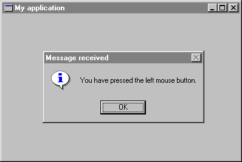

Step 2: Defining a main window class
In this step, you will learn how to define your window type for the main window, including application-specific behavior and appearance. You will create a more specialized main window class which is descending from WEL_FRAME_WINDOW.
The quickest way to make a window useful is to explain it how to respond to Windows messages. For example, when the user clicks the left mouse button in the main window of My application, the corresponding window object receives a Wm_lbuttondown message from Windows. This tells the window object that the user clicked the mouse in it. It also passes the coordinates of the point where the user clicked. To intercept and respond to Windows messages, WEL defines several procedures corresponding to the most common Windows messages. For instance, WEL_WINDOW has a procedure named on_left_button_down corresponding to the Wm_lbuttondown message. To respond to the message, you just need to redefine this procedure as follows:
on_left_button_down (keys, x_pos, y_pos: INTEGER) is -- Display a message box when the user presses the -- the left mouse button. local msgBox: WEL_MSG_BOX do !! msgBox.make msgBox.information_message_box (Current, "You have pressed the left mouse button.", "Message received") endSince you have defined a customized main window class, you have to change the main_window function in APPLICATION in order to return an instance of MAIN_WINDOW. Class APPLICATION must be defined as follows:
class APPLICATION inherit WEL_APPLICATION creation make feature main_window: MAIN_WINDOW is -- Create the application's main window. once !! Result.make end end -- class APPLICATIONFigure 3 shows the message box displayed when the user clicks in the main window.
Figure 3

The program created here closes when the user clicks on the system close box. But in serious applications, you may want to change this default behavior, for instance, to ask the user if he wants to save his work. WEL provides an easy way to do that, you just need to redefine the boolean function closeable to perform tests and actions needed. If you return True (which is the default value) the user will be able to close the window, otherwise the user will be unable to close it. A possible implementation could be the following:
closeable: BOOLEAN is -- Does the user want to quit? local msgBox: WEL_MSG_BOX do !! msgBox.make msgBox.question_message_box (Current, "Do you want to quit?", "Quit") Result := msgBox.message_box_result = Mb_ok end
Here is the full source code of MAIN_WINDOW:
class
MAIN_WINDOW
inherit
WEL_FRAME_WINDOW
redefine
on_left_button_down, closeable
end
creation
make
feature {NONE} -- Initialization
make is
-- Make the main window.
do
make_top ("My application")
end
feature {NONE} -- Implementation
on_left_button_down (keys, x_pos, y_pos: INTEGER) is
-- Display a message box when the user presses the
-- the left mouse button.
local
msgBox: WEL_MSG_BOX
do
!! msgBox.make
msgBox.information_message_box (Current, "You have pressed the left mouse button.",
"Message received")
end
closeable: BOOLEAN is
-- Does the user want to quit?
local
msgBox: WEL_MSG_BOX
do
!! msgBox.make
msgBox.question_message_box (Current, "Do you want to quit?", "Quit")
Result := msgBox.message_box_result = Mb_ok
end
end -- class MAIN_WINDOW